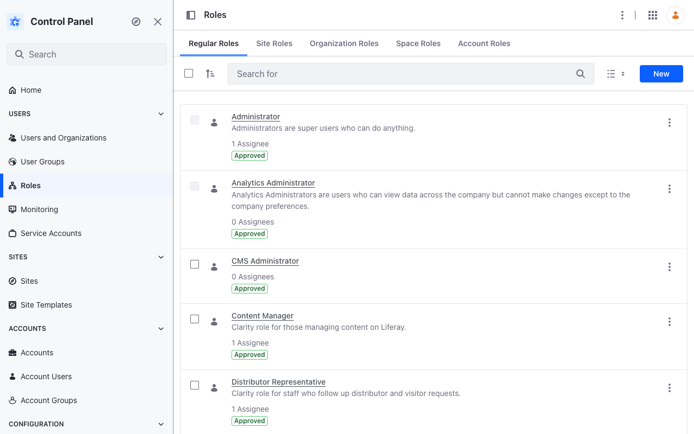
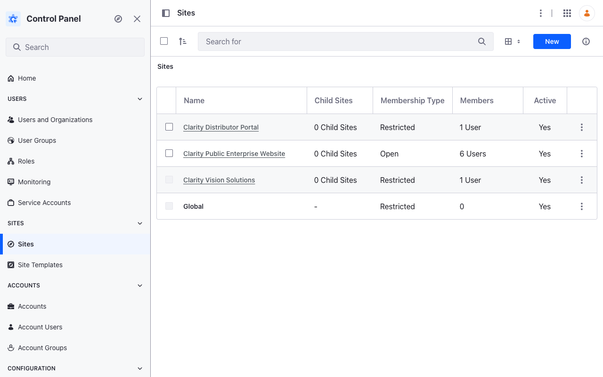
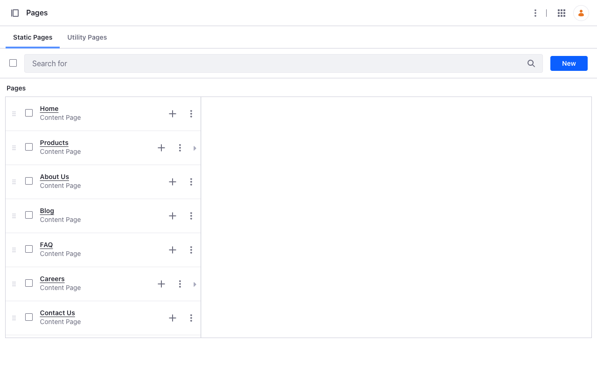
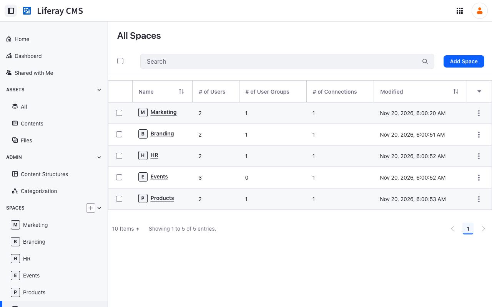

Building Enterprise Websites with Liferay and AI — Workbook
Over two days you build Clarity Vision Solutions' public enterprise website on Liferay DXP 2026.Q3. Every exercise is a prompt you give your AI coding agent, followed by a check you do yourself in Liferay. The agent does the typing; you set the requirement, read what it did, and confirm the result on screen before you build on it.
How to use this workbook
- Your agent works, you verify. Each ✅ Verify step tells you where to look in Liferay. Verification is read-only: open the screen, look, don't change anything. If what you see doesn't match, tell the agent what's wrong and let it fix it.
- Short sessions. Start a fresh agent session for each exercise, or each small group of related ones. The agent picks the project up from
solution-context.mdandsolution-index.yaml(Exercise S.1), and the skills in.claude/skills/(or.agents/skills/) tell it how Liferay behaves. - Prompts name their skill. The 🧩 line lists the skills the exercise relies on. You don't have to type them: the agent loads them from the prompt's wording. Naming one in the prompt helps a less capable agent.
- Every prompt that creates something says who may see it. Permission gaps fail silently: a page answers, a form saves, and only a visitor notices. Keep the access lines when you adapt a prompt.
- Personas. Some checks ask you to sign in as a persona (all passwords are
learn). Use a private browser window for a second persona, so you stay signed in as the admin in the other.
| Mark | Meaning |
|---|---|
| 🎯 | What you're building |
| 🧩 | Skills the exercise relies on (🆕 = written for this course) |
| 📖 | Concept to read before you start |
| 📋 | Steps you do yourself |
| 💬 | Prompt to paste into your agent |
| ✅ | How to check it worked, in Liferay |
| ⚠️ | A gotcha worth knowing before you start |
| ⭐ | Bonus challenge, if you finish early |
Roadmap
| Day | Level | You build | Original BEWL challenge |
|---|---|---|---|
| 1 | Setup | Workspace, PostgreSQL, DXP, MCP server, context files | 2 |
| 1 | 1 — Users and permissions | Personas, user groups, roles, least-privilege permissions | 3 |
| 1 | 2 — Sites | The public site and the distributor portal, membership, site settings, instance home page | 4 |
| 1 | 3 — Pages and navigation | Page hierarchy, master pages, display page templates, navigation menus | 5, 6 |
| 1 | 4 — Fragments | The Clarity Components fragment set and page compositions | 7 |
| 1 | 5 — Design | Style book, Theme CSS client extension, favicon, logo | 8 |
| 1 | 6 — CMS content | Spaces, content structures, file structures, entries, taxonomy | 9, 10, 11, 14 |
| 2 | 7 — Displaying content | Mapping, collections, the FAQ page, the announcement bar | 12, 15 |
| 2 | 8 — Commerce | Catalog, specifications, products, channel, product pages | 16 |
| 2 | 9 — Headless APIs | API Explorer, batch imports of legacy content and products | 17 |
| 2 | 10 — Workflow and publishing | Approval workflow for articles and the site-wide announcement | 18 |
| 2 | 11 — Search | Job search page, facets, search blueprints, upcoming events | 19, 20 |
| 2 | 12 — Objects | Contact Us object, form, follow-up workflow, data set dashboard | 21 |
| 2 | 13 — Personalization | A Home page variant for distributors, by user group | 22 |
Challenge 1 (touring the finished site), Challenge 13 (ChatGPT content creation), the Liferay Data Platform overview and the performance tuning module aren't exercises in this course. Your instructor covers them in the slides.
The course avoids features Liferay has deprecated or moved to maintenance mode on 2026.Q3: it uses Liferay CMS instead of Web Content, Blogs, Documents and Media and Asset Libraries; workflow instead of Publications; Object fields instead of Custom Fields; and user-group targeting instead of DXP segments.
Day 1
Setup — Your workspace, Liferay DXP and the MCP server
Do this chapter once, on the first morning. It gets Liferay DXP running on PostgreSQL, connects your AI agent to Liferay's MCP server, and seeds the two files every later session reads.
S.1 — Open the workspace and seed the context files
🎯 The course repository open in VS Code, your agent able to read its skills, and two files at the workspace root that let any new agent session pick up the project: solution-context.md (what Clarity is building) and solution-index.yaml (what's done and what's left).
🧩 None — the prompt below is self-contained.
📋 Steps:
- Clone the repository the instructor shares, then open its folder in VS Code (File → Open Folder). Open the folder, not a file: that's how your agent finds
.claude/(Claude Code) or.agents/(other agents) and their skills. - Open your agent's chat in agent mode, then send the prompt.
💬 Prompt:
We're building Clarity Vision Solutions' public enterprise website on Liferay
DXP during a two-day course. Seed two files at the workspace root:
solution-context.md and solution-index.yaml.
First confirm that context-source/clarity-brief.md and context-source/README.md
exist. Stop and tell me if either is missing; don't invent content.
solution-context.md: read the brief and write a short summary (one page, not
a copy): who Clarity is, the site's five goals, the personas with their
responsibilities, the two sites, and where the content lives (CMS Spaces).
Cite context-source files by path instead of copying them.
solution-index.yaml: a top-level "requirements" list with one entry per
requirement R1-R13 in section 8 of the brief, each with: id, title, level
(the number in the brief's "Built in" column), status: todo, and an empty
artifacts list.
Don't create or change anything else. Read both files back to me.
✅ Verify: open both files in VS Code. solution-context.md fits on a screen or two and names the personas; solution-index.yaml has 13 entries, all status: todo.
⚠️ Keep solution-context.md short. Every new session reads it, so a long file costs tokens on every prompt for the rest of the course.
S.2 — Start PostgreSQL and Liferay DXP
🎯 PostgreSQL running in Docker, and Liferay DXP 2026.Q3.10 running on it at http://localhost:8080.
🧩 None — you run these commands yourself, in your own terminal.
📋 Steps:
- Copy the activation key file you received by email into
configs/local/deploy/(create the folder if it doesn't exist). It's git-ignored: it never leaves your computer. -
In VS Code's terminal (Terminal → New Terminal), at the workspace root, start the database:
bash docker compose up -d -
Unpack the DXP bundle. It uses the copy you downloaded before the course, in
~/.liferay/bundles:bash blade server init -
Start Liferay and watch the log:
bash blade server start --tailThe first start creates the database and takes a few minutes. Wait forServer startup in [...] milliseconds.
✅ Verify:
docker compose psshowsclarity-postgresasrunning (healthy).http://localhost:8080shows the Liferay home page. Sign in asadmin@clarityvisionsolutions.comwith passwordlearn. The first sign-in shows a Terms of Use notice about Liferay Enterprise Search: read it and close it with Done.- In the Global Menu (the grid icon, top right) → Control Panel → Server Administration, the Properties → Portal Properties tab lists
jdbc.default.urlwithpostgresql.
⚠️ You start and stop Liferay, not the agent. Never ask the agent to run blade server start, stop or any Tomcat script: a server started inside an agent session stops when that session ends, and a stopped server drops the MCP connection. If port 8080 or 5432 is already in use, stop the other program first.
S.3 — Save the admin credentials for the agent
🎯 A credentials file every agent session finds on its own, so you never type a password into a chat.
🧩 None.
📋 Steps:
-
Create
configs/local/admin.propertiesyourself in VS Code, with these two lines:properties ADMIN_EMAIL=admin@clarityvisionsolutions.com ADMIN_PASSWORD=learn -
Send the prompt.
💬 Prompt:
Confirm configs/local/admin.properties exists and is listed in .gitignore.
Read the admin email and password from it, never printing the password, and
check they work: call GET /o/headless-admin-user/v1.0/my-user-account with
Basic auth on the port Tomcat listens on (read it from
bundles/tomcat/conf/server.xml). Show me the name and emailAddress from the
response.
✅ Verify: the agent shows Clarity Admin and admin@clarityvisionsolutions.com, and its messages never contain the password.
S.4 — Turn on Liferay's MCP server
🎯 Your agent connected to Liferay's MCP server at http://localhost:8080/o/mcp, so it can call Liferay's APIs as a tool instead of hand-writing curl commands.
🧩 mcp-server
📖 What is MCP? The Model Context Protocol is a standard way for an AI agent to use tools. Liferay DXP 2026.Q3 ships an MCP server that exposes every headless API (sites, pages, CMS, objects, commerce, users…) as tools. The agent discovers them at runtime, reads each operation's schema, then calls it, all with the permissions of the user it authenticates as.
On 2026.Q3 the MCP server has two switches. The workspace already turns on the first one, the feature flag LPD-63311, in configs/local/portal-ext.properties. The second is the MCP Server instance setting. It's an ordinary OSGi configuration, so your agent can switch it on with a configuration file, live, without a restart.
📋 Steps:
- Send the prompt below. It turns the MCP server on and registers it in your agent's own configuration file.
- Restart your agent session (close and reopen the chat, or reload the VS Code window). Agents read their MCP configuration only when a session starts.
💬 Prompt:
Using the mcp-server skill, turn on and connect me to the Liferay MCP server
of this workspace's running DXP.
1. Enable the MCP Server instance setting with its OSGi configuration file,
in both bundles/osgi/configs (applies live) and configs/local/osgi/configs
(survives the next blade server init). Don't restart Liferay.
2. Probe it: send a JSON-RPC initialize request to /o/mcp on the Tomcat port,
with Basic auth from configs/local/admin.properties. Show me the
serverInfo it returns.
3. Register it as an HTTP (Streamable HTTP, not SSE) MCP server named
"liferay" in the configuration file of the agent I'm using right now:
.mcp.json for Claude Code, .vscode/mcp.json for GitHub Copilot,
.codex/config.toml for Codex. Authenticate with a Basic Authorization
header built from configs/local/admin.properties.
4. Add that configuration file to .gitignore: it contains a credential.
5. Tell me exactly how to restart my session so the server loads.
✅ Verify:
- In Liferay, open the Global Menu → Control Panel → Instance Settings → Platform → MCP Server: Enabled is checked. Don't change it.
- After the restart, approve the project's
liferayserver if your agent asks (Claude Code does, for servers in.mcp.json), then open your agent's MCP server list (Claude Code: type/mcp; Copilot: MCP: List Servers in the Command Palette; Codex: its MCP settings).liferayis listed as connected. - Ask the agent "Using the liferay MCP server, list the tool sets it offers", and check it answers from the server, not from memory.
⚠️ If the server shows as connected but lists no tools, Liferay was restarted since your session started: reconnect or restart the session.
S.5 — Read the terrain
🎯 The agent confirms the facts every later prompt depends on, before anything is built.
💬 Prompt:
Read .claude/CLAUDE.md (or .agents/ if that's what you use) and tell me,
without changing anything: the workspace root, the DXP version from
gradle.properties, the database Liferay is using, the Tomcat port, how you
authenticate, whether the liferay MCP server is available to you, and which
sites already exist in the instance.
✅ Verify: compare the answer with gradle.properties, configs/local/portal-ext.properties and Control Panel → Sites. The only sites are Liferay's defaults: the Clarity sites don't exist yet.
From here on, work in short agent sessions. Start a new session (or /clear) when you move to an exercise that doesn't build directly on the previous one. A fresh session costs fewer tokens and stays focused, and nothing is lost: it picks the project up from solution-context.md and solution-index.yaml.
Level 1 — Users and permissions
📖 Clarity's website is built by a team, not by one administrator. Before anyone can contribute, the instance needs their accounts, a way to group them (user groups), and roles that grant each person only what their work requires. A regular role applies everywhere in the instance; a site role applies only inside the sites where it's assigned. You'll give the roles their permissions once the site exists, in Level 2.
1.1 — Create Clarity's user groups, roles and personas
🎯 Five user groups, six custom roles and seven personas, each persona in its user group with its regular role and portrait.
🧩 manage-roles-permissions
📎 R1 — personas, user groups and roles.
💬 Prompt:
Using the manage-roles-permissions skill, set up Clarity's people from
context-source:
1. Create the user groups in data/user-groups.csv, with their descriptions.
2. Create the roles in data/roles.csv: "regular" rows as regular roles,
"site" rows as site roles, each with its description.
3. Create the users in data/personas.csv, with an external reference code
of the form PERSONA-<SCREENNAME>, the screen name, email, first and last
name and job title from the file. Give each of them the password "learn"
(the course's shared training password) and make sure none of them is
asked to change it at first sign-in. Upload the portrait where the file
lists one.
4. Add each user to the user group in their row, and assign them the
regular role in the "regularRoles" column.
Make every step idempotent (upsert by external reference code or name), so
I can run this prompt again safely. Report a table of users with their
groups and roles as Liferay returns them, not as you intended them.
✅ Verify (as the Clarity Admin):
- Global Menu → Control Panel → Users and Organizations: the seven personas are listed and active. Open Christian Carter: his portrait shows, his job title is Marketing Coordinator, and under Memberships → User Groups he's in Marketing.
- Control Panel → User Groups: five groups. Open Marketing: Christian Carter and Clara Murphy are members.
- Control Panel → Roles: the Regular Roles tab has the five Clarity roles; the Site Roles tab has Site Content Contributor. Open Marketing Coordinator → Assignees → Users: Christian Carter is listed.
- In a private browser window, sign in as
christian.carter@clarityvisionsolutions.com/learn. You land in the portal without a password change prompt.


📖 In the Control Panel you can also assign a role to a user group, so every member gets it. Liferay's headless API assigns roles to users only, so the agent assigns them one by one here. Look at both in Control Panel → Roles → a role → Assignees.
⭐ 1.2 — Bonus: a manager for the Marketing team
Let Clara Murphy view the members of the Marketing user group and add new ones, without the Administrator or Site Administrator role and without access to any other user group. Write the prompt yourself. Success: impersonating Clara, she can open Control Panel → User Groups → Marketing and add a member; another user group shows no Assign Members action.
Level 2 — Sites
📖 In Liferay DXP, each site has its own pages, members and settings. Clarity needs its public enterprise website, configured for launch, and an empty site for a future distributor portal. Visitors who aren't signed in can see a public site's public pages; members get more through site roles. Some settings belong to the site (its address, languages, accessibility), others to the whole instance (where http://localhost:8080/ takes you).
2.1 — Create Clarity's two sites
🎯 Clarity Public Enterprise Website and Clarity Distributor Portal, both blank sites, with stable external reference codes so every later prompt can address them.
🧩 manage-sites 🆕
📎 R2 — the public site.
💬 Prompt:
Create Clarity's two sites as blank sites (no template, no initializer),
as described in section 3 of context-source/clarity-brief.md:
- "Clarity Public Enterprise Website", external reference code
clarity-public, friendly URL /clarity
- "Clarity Distributor Portal", external reference code
clarity-distributor-portal, friendly URL /distributor-portal
If a site with that external reference code already exists, leave it as it
is and tell me. Read both back and show me their id, external reference
code, name and friendly URL. Add both to solution-index.yaml under R2.
✅ Verify: Global Menu → Control Panel → Sites: both sites are listed. Open Clarity Public Enterprise Website: it has no pages yet.

2.2 — Add members and assign site roles
🎯 The people who build and contribute to the public site are its members, with the right site roles.
🧩 manage-sites 🆕, manage-roles-permissions
📎 R1, R2 — least privilege inside the site.
💬 Prompt:
Using the manage-sites and manage-roles-permissions skills, set the members
of the site clarity-public:
- Walter Douglas has the site role Site Administrator.
- Christian Carter and Harper Roberts have the site role Site Content
Contributor.
- Ian Miller and Clara Murphy are members with no extra site role.
Don't add any other member or role. Read the memberships and site roles
back from Liferay and show them as a table. Then tell me how I'd add a
whole user group as a site member, and whether you can do that through
the API on this release.
✅ Verify: in the public site, open the Site Menu (the panel on the left; open it with the icon at the top left) → People → Memberships:
- the Users tab lists Walter Douglas, Christian Carter, Harper Roberts, Ian Miller and Clara Murphy (and you, the site's creator);
- the Actions menu (⋮) → Assign Site Roles for Christian Carter shows Site Content Contributor selected. Close it without saving.

📖 Adding a user group as a site member makes every current and future member of the department a site member. Liferay's headless API can't do that on this release, so your agent told you the screen instead. You'll meet a few settings like this: part of working with an agent is knowing when the UI is the right tool.
2.3 — Configure the public site
🎯 The public site is ready for its audience: a description, open membership, English and Spanish only, Liferay's accessibility menu, and a virtual host.
🧩 manage-sites 🆕
📎 R2 — address, languages and accessibility.
💬 Prompt:
Configure the site clarity-public as described in section 3 of
context-source/clarity-brief.md:
1. Description: the text in the brief.
2. Membership type: Open.
3. Languages: a custom set with only English (United States), the default,
and Spanish (Spain).
4. Turn on the accessibility menu for this site only.
5. Virtual host for the public pages: www.clarityvisionsolutions.com.
Keep the friendly URL /clarity.
Prefer the headless APIs; for a setting they don't cover, use the site's
group-scoped OSGi configuration; if neither exists, don't use an
unsupported API: give me the exact screen and field to set it myself.
Tell me which mechanism you used for each setting, read each one back, and
check the accessibility menu is NOT on for the Clarity Distributor Portal.
📋 Steps: set the virtual host yourself on the screen the agent named (Site Settings → Site Configuration → Site URL → Public Pages → Virtual Host), and save.
✅ Verify: in the public site, Site Menu → Configuration → Site Settings:
- Site Configuration → Details: the description, and Membership Type Open;
- Site URL: friendly URL
/clarity, and the virtual hostwww.clarityvisionsolutions.com; - Localization: only English (United States) and Spanish (Spain) are In Use;
- Accessibility: the accessibility menu is enabled.
⚠️ The virtual host only answers once www.clarityvisionsolutions.com resolves to your computer (a hosts file entry). You don't need it during the course: keep using http://localhost:8080/web/clarity.
2.4 — Give the Marketing Coordinator role its permissions
🎯 The Marketing Coordinator role can manage collections and categories in the sites its holders work in, and nothing more. You'll see the effect by impersonating Christian Carter before and after.
🧩 manage-roles-permissions
📎 R1 — least-privilege permissions.
📖 Permissions are actions (VIEW, ADD, UPDATE…) on resources (an application, a kind of item). A regular role's permissions apply at company scope: in every site its holder can work in. A site role's permissions apply only in the site where it's assigned, which is why Site Content Contributor exists. In Level 6, Liferay CMS Spaces add their own membership and roles on top: that's where Christian will get his content-authoring rights.
📋 Steps:
- As the Clarity Admin, go to Control Panel → Users and Organizations, click the Actions menu (⋮) next to Christian Carter, and choose Impersonate User. In the tab that opens, go to
http://localhost:8080/web/clarityand open the Site Menu: Christian has no Site Builder or Categorization section. Keep the tab open. - Send the prompt.
💬 Prompt:
Using the manage-roles-permissions skill, grant the regular role "Marketing
Coordinator", at company scope, the permissions a marketing coordinator
needs to curate what the site shows, and nothing beyond that:
- Collections: access the Collections application in site
administration, view it, add collections, and view and update
collections;
- Categories: access the Categories application in site administration,
view it, add vocabularies and categories, and view and update
categories.
Before granting anything, read the role's current permissions and list the
resource names and action keys you'll add, and why each is needed. Don't
grant PERMISSIONS, DELETE or any administrator action, and don't touch any
other role. Afterwards, read the role's permissions back and show me the
difference.
✅ Verify:
- Control Panel → Roles → Marketing Coordinator → Define Permissions → Summary: the permissions the agent listed, and nothing else.
- Refresh the tab where you're impersonating Christian Carter: the Site Menu now has Site Builder → Collections and Categorization → Categories, with a New button in each. Don't save anything. Close the tab when you're done (Be Yourself Again in the user menu).
📖 Liferay DXP 2026.Q1 moved Blogs, Documents and Media, Web Content and Asset Libraries to maintenance mode in favor of Liferay CMS, so this course doesn't build on them.
2.5 — Point the instance at the public site
🎯 http://localhost:8080/ opens Clarity's public site, and users land there after signing in or out.
🧩 manage-sites 🆕
💬 Prompt:
I want the instance's Home URL, Default Landing Page and Default Logout
Page to be /web/clarity. Check whether this release has a supported API or
OSGi configuration for these fields. If it has, set them and read them
back. If it hasn't, don't use an unsupported API and don't restart
Liferay: give me the exact screen and fields to set them myself.
📋 Steps: if the agent gave you a screen, set the three fields there and save.
✅ Verify: Global Menu → Control Panel → Instance Settings → Platform → Instance Configuration → General: the three fields read /web/clarity. Open http://localhost:8080/ in a private window: it redirects to the Clarity site (still empty until Level 3).
Level 3 — Pages, master pages and navigation
📖 From here on, the site's structure lives in code: a site initializer client extension in client-extensions/clarity-site/. It's a folder tree of JSON files (pages, master pages, menus, fragments, style books) that Liferay applies to the site every time you deploy it. Your agent edits the tree and deploys it; you check the result in Liferay's own editors. Working this way, the site is version-controlled and can be rebuilt on any environment, and the agent never has to click through the page editor.
📖 A content page is built from fragments. A master page holds what every page shares (header, footer) around a drop zone where each page's own content goes. Clarity uses two: a Primary Master Page for content pages, and a lighter Secondary Master Page for the sign-in and utility pages. Each master page can limit which fragments authors may drop into pages that use it.
3.1 — Scaffold the site initializer and the page hierarchy
🎯 A clarity-site site initializer, bound to the existing site clarity-public, that creates Clarity's page hierarchy as empty content pages.
🧩 scaffold-client-extension, manage-pages, deploy-and-verify
📎 R3 — page hierarchy.
💬 Prompt:
Using the scaffold-client-extension, manage-pages and deploy-and-verify
skills, create a site initializer client extension in
client-extensions/clarity-site whose siteExternalReferenceCode is
clarity-public (the site created in Level 2: the initializer must update
that site, not create a new one).
In it, create the page hierarchy from section 4 of
context-source/clarity-brief.md as empty, public content pages, in this
order: Home (/home), Products (/products) with its child Product List
(/product-list), About Us (/about-us), Blog (/blog), FAQ (/faq), Careers
(/careers) with its child Open Positions (/open-positions), Contact Us
(/contact-us) and Search (/search-results — /search is reserved). Leave out
Product Detail, Events and Contact Us Responses: later levels add them.
Deploy it, confirm in the log that the initializer ran for clarity-public,
and read the page tree back from Liferay. Update solution-index.yaml (R3).
✅ Verify: in the public site, Site Menu → Site Builder → Pages: the pages are listed in this order, with Product List under Products and Open Positions under Careers. Open http://localhost:8080/web/clarity/home: an empty page with Liferay's default header.

3.2 — Build the Primary and Secondary master pages
🎯 Two master pages wireframed as in section 4 of the brief, applied to the pages, with the allowed fragments limited on the primary one.
🧩 theme-and-design, manage-pages
📎 R3 — master pages.
💬 Prompt:
Using the theme-and-design and manage-pages skills, add two master pages to
client-extensions/clarity-site, wireframed with Liferay's built-in Container,
Grid, Image, Paragraph and Menu Display fragments (no custom fragments yet;
Level 4 adds them):
Primary Master Page:
- A "Page Header" container holding:
- a "Header Announcement Bar" container (empty for now; Level 7 fills it),
- a "Header Navigation Bar" container, fixed width, with vertical padding
spacer 3 and horizontal padding spacer 6, holding a three-column grid
(middle column wider, vertically centered) whose columns contain:
"Header Branding" (flex row, start: an Image fragment),
"Header Navigation" (flex row, centered: a Menu Display fragment),
"Header User Actions" (flex row, end: empty for now).
- The drop zone. On it, disallow the built-in "Footers" and "Navigation
Bars" fragment sets.
- A "Page Footer" container with "Footer Branding" (an Image fragment),
"Footer Navigation" (three Menu Display fragments side by side) and a
"Footer Copyright" paragraph "© Clarity Vision Solutions".
Secondary Master Page: the same, without the Header Announcement Bar,
Footer Branding and Footer Navigation containers.
Name each container exactly as above (the names show in the page editor's
Browser panel). The Header Branding and Footer Branding Image fragments are
Clarity's logo (Level 7 maps it): keep them no wider than 200px.
Turn off the Classic theme's own header and footer on both masters. Apply
the Primary Master Page to every page from 3.1. Deploy, and confirm from
the log and from the pages' data that both masters exist and each page
uses the primary one.
✅ Verify:
- Site Menu → Design → Page Templates → Masters: Primary Master Page and Secondary Master Page. Open the primary one (click its name): the Browser panel (the tree icon on the left) shows Page Header → Header Announcement Bar and Header Navigation Bar → grid → Header Branding, Header Navigation, Header User Actions, then the drop zone and Page Footer. Select the drop zone and click Configure Allowed Fragments: Footers and Navigation Bars are unchecked. Leave the editor without publishing.
- Open the Home page: the header and footer wireframe surround an empty body.

3.3 — Create the navigation menus and wire them in
🎯 The four menus from section 4 of the brief, with the header and footer Menu Display fragments pointing at them.
🧩 manage-pages
📎 R3 — navigation.
💬 Prompt:
Using the manage-pages skill, add the four navigation menus from section 4
of context-source/clarity-brief.md to client-extensions/clarity-site, each
with its own external reference code. The Footer Legal Menu items are URL
items to https://www.clarityvisionsolutions.com/privacy and /terms, opening
in a new tab.
Then point the Menu Display fragments of both master pages at them: the
header one at Header Page Menu (on both masters), and the three footer ones
at Footer Resources Menu, Footer Company Menu and Footer Legal Menu, in that
order. Deploy, then count each menu's items over the API and compare with
the brief.
✅ Verify:
- Site Menu → Site Builder → Navigation Menus: four menus. Open Header Page Menu: Products, About Us, Blog, FAQ, Careers, Contact Us, in that order.
- Open the Home page: the header shows those six links, and the footer shows the three footer menus. Click FAQ: you're on the FAQ page.

⭐ 3.4 — Bonus: the Sign In utility page
Add a Sign In utility page that uses the Secondary Master Page and holds Liferay's Sign In widget, and make it the site's default sign-in page. Success: signing out and clicking Sign In shows Clarity's lighter header and footer around the sign-in form.
Level 4 — Fragments and page compositions
📖 Fragments are the building blocks of content pages: HTML, CSS and JavaScript with editable areas, plus a JSON configuration that defines the options an author sets in the page editor (text, select, checkbox, color, URL…). Clarity keeps its own fragments in a Clarity Components fragment set. A composition is a saved arrangement of fragments that authors reuse; in the site initializer, a page's arrangement simply lives in its page-definition.json.
4.1 — Create the Clarity Components fragments
🎯 Five custom fragments in a Clarity Components set: Search Button, Login and User Menu, Clarity Button, Clarity Card and FAQ Question and Answer Pair.
🧩 scaffold-fragment
📎 R4 — reusable components.
💬 Prompt:
Using the scaffold-fragment skill, add a "Clarity Components" fragment set
to client-extensions/clarity-site with these fragments. Use
context-source/design-reference/clarity-components/ as the visual reference
(same markup ideas, editable ids and configuration), but write clean code
that works on this release, uses CSS variables rather than hard-coded
colors, and needs no theme other than Classic:
1. Search Button: a Clay icon link. Configuration: iconName (text, default
"search"), iconSize (select: 1rem, 1.5rem, 2rem, 2.5rem, 3rem; default
1rem), link (url), hideLabel (checkbox, default true) and buttonLabel
(text, default "Search", shown only when hideLabel is false).
2. Login and User Menu: a "Sign In" button for guests, Liferay's user
personal bar for signed-in users.
3. Clarity Button: an editable link styled as a button, with type (solid,
outline, borderless), style (primary, secondary), size (small, regular,
large) and inverted (checkbox) options.
4. Clarity Card: editable image "card-image", text "category", text
"card-title", rich text "summary" and link "card-link" (editable ids
exactly as written, so they can be mapped later).
5. FAQ Question and Answer Pair: an accessible disclosure with editable
text "main-text" (the question) and rich text "answer-text".
Deploy, and check in the log that addFragmentEntries ran and none of the
fragments failed to compile.
✅ Verify: Site Menu → Design → Fragments: the Clarity Components set lists the five fragments. Click Search Button: the Configuration tab shows the five options, and the Code tab's preview shows a search icon. Close it without publishing.

4.2 — Put the custom fragments in the master pages
🎯 The search button and the login/user menu in the header of both master pages, the search button linking to the Search page.
🧩 scaffold-fragment, manage-pages
💬 Prompt:
In client-extensions/clarity-site, add the Search Button and Login and User
Menu fragments to the "Header User Actions" container of both master pages,
in that order. Configure the Search Button's link to the Search page
(/search-results). Deploy (fragments before pages: follow the deploy order
the site-initializer rules describe), and confirm on a rendered page as
Guest that both appear.
✅ Verify: open http://localhost:8080/web/clarity/home in a private window: the header shows a search icon and a Sign In button. Click the search icon: you land on the Search page. Sign in as any persona: the Sign In button is replaced by the user's avatar menu.
4.3 — Wireframe the Home and FAQ pages
🎯 The Home and FAQ pages laid out like Clarity's previous site, ready for content in Level 7.
🧩 manage-pages, scaffold-fragment
📎 R4 — page compositions.
💬 Prompt:
Using manage-pages, lay out two pages in client-extensions/clarity-site,
using the compositions in context-source/design-reference/compositions/
(page-composition-home.zip and page-composition-faq.zip) as the layout
reference. Unzip them to a temporary folder outside the workspace to read
them; don't import the zips.
Home: a "Banner" container holding a fixed-width "Banner Content"
container with a two-column grid (left: heading "Elevate Your Brand with
Premium Eyewear", a paragraph and a Clarity Button "Explore Products" to
/products; right: an Image fragment), a "Clarity Solutions Promo" container with a
"Content Wrapper" (heading, paragraph, Image), a "See the Difference"
section with three short value statements, a "Helpful Articles" container
(a heading only for now; Level 7 adds the collection) and a "Distributor
Promo" container (heading "Become a Clarity Distributor", a paragraph and a
Clarity Button to /contact-us).
FAQ: a two-column grid with an Image fragment on the left and an "FAQ
Content" container on the right holding four "FAQ Section" containers, one
per FAQ category in context-source/content/faqs.json, each with a heading
(the category name) and nothing else yet; then a "Promoted Articles"
container with a heading.
Use Clarity Button and built-in fragments only, name every container as
written, and deploy.
✅ Verify: open Home and FAQ in edit mode (the pencil icon at the top right). In the Browser panel, the containers carry the names from the prompt. Leave without publishing.
⭐ 4.4 — Bonus: a configurable sign-in URL
Change the Login and User Menu fragment so authors can set the sign-in button's target URL from the fragment configuration instead of a hard-coded one. Success: in the page editor, selecting the fragment shows a URL option, and changing it changes where Sign In goes.
Level 5 — Design: style book, Theme CSS, favicon and logo
📖 Liferay separates what's on a page from how it looks. A style book changes a theme's design tokens (colors, fonts, spacing) without CSS; each style book belongs to the theme it was made for. A Theme CSS client extension replaces the theme's CSS entirely and declares its own tokens, which then appear in the page editor's style options (for example Color Brand Primary). A favicon client extension and a site logo complete the brand. Master pages carry the Theme CSS, so every page using them follows.
5.1 — A style book for a quick brand check
🎯 A Clarity Style Book for the Classic theme with Clarity's primary color, marked as the default.
🧩 theme-and-design
📎 R5 — brand without editing each page.
💬 Prompt:
Using the theme-and-design skill, add a style book named "Clarity Style
Book" for the Classic theme to client-extensions/clarity-site, setting only
the Primary theme color to #187373, and make it the site's default style
book. Deploy and confirm the style book exists and is the default.
✅ Verify: Site Menu → Design → Style Books: Clarity Style Book is marked Default. Open it: under Color System → Theme Colors, Primary is #187373, and the preview's buttons are teal. Open Home: the Explore Products button is teal. Leave the style book editor without publishing.

5.2 — Clarity's Theme CSS and favicon client extensions
🎯 Two frontend client extensions: Clarity Theme CSS, carrying Clarity's full brand from section 5 of the brief and declaring its color tokens for the page editor, and Clarity Favicon.
🧩 theme-and-design, scaffold-client-extension, deploy-and-verify
📎 R5.
💬 Prompt:
Using the theme-and-design and scaffold-client-extension skills, create a
frontend client extension project client-extensions/clarity-theme with:
1. A themeCSS client extension "Clarity Theme CSS", built on the Classic
theme's CSS, applying the brand in section 5 of
context-source/clarity-brief.md: the brand primary and secondary colors
with their darker and lighter shades, the neutral colors, Poppins as the
font, card and button radii. Include a frontend-token-definition.json
that declares the brand colors (Color Brand Primary, its shades, Color
Brand Secondary, Color Neutral 0 to 10) so they appear in the page
editor's style options.
2. A themeFavicon client extension "Clarity Favicon" serving
context-source/assets/branding/clarity-favicon.svg.
Keep these in their own project: a frontend project can't share one with
the site initializer. Deploy it and confirm both client extensions are
registered and the CSS URL answers 200.
✅ Verify: Global Menu → Applications → Client Extensions: Clarity Theme CSS and Clarity Favicon are listed and Ready (don't change them).

5.3 — Apply the brand to the site and its master pages
🎯 Both master pages use Clarity Theme CSS; the site has Clarity's favicon and logo.
🧩 theme-and-design, manage-pages
💬 Prompt:
In client-extensions/clarity-site, bind Clarity Theme CSS (the themeCSS
client extension from client-extensions/clarity-theme) to both master pages,
and set the Clarity Favicon and the logo
context-source/assets/branding/clarity-logo-c.png on the site's public
pages. Use the site initializer where it supports a setting and the
headless APIs where it doesn't, and tell me which you used for each.
Redeploy (the Theme CSS must already be registered when the initializer
imports the masters), then fetch the Home page as Guest and show me the
stylesheet link of Clarity Theme CSS and the favicon link in its HTML.
✅ Verify:
- Open Home in a private window: Poppins text, teal buttons, the Clarity favicon in the browser tab.

- Site Menu → Design → Page Templates → Masters → Primary Master Page → the Page Design Options panel (the brush icon) → More Page Design Options: Theme CSS Client Extension shows Clarity Theme CSS. Leave without saving.
- In the master's editor, select the Header Announcement Bar container → Styles → Background: the color picker offers Color Brand Primary. Leave without publishing.
⚠️ Once a Theme CSS client extension replaces the theme's CSS, the Classic theme's style book no longer applies to those pages: 5.1 is a quick check, 5.2 is Clarity's real brand.
Level 6 — Content in Liferay CMS
📖 Liferay CMS keeps content in Spaces, independent of the sites that display it. Each Space has its own members, folders, content structures (the fields of a kind of content, like FAQ or Job Listing), file structures (files with extra fields) and categories. A Space shows its content on a site once it's connected to that site. Publishing a structure also generates REST and GraphQL APIs for its content.
📖 Clarity used Classic web content and asset libraries on earlier releases. This course uses the new CMS throughout: Spaces replace asset libraries, content structures replace web content structures.
6.1 — Create the Spaces and their members
🎯 Five Spaces (Marketing, Branding, HR, Events, Products), each connected to the public site, with the right people as members.
🧩 manage-cms, manage-roles-permissions
📎 R6 — content shared across sites.
💬 Prompt:
Using the manage-cms and manage-roles-permissions skills, create the five
Spaces listed in section 6 of context-source/clarity-brief.md, each with an
external reference code of the form space-<name in lowercase> and a short
description. Connect each one to the site clarity-public (searchable).
Members:
- Marketing: the Marketing user group as members; Clara Murphy as the
Space's administrator.
- Branding and Products: the IT user group as members; Walter Douglas as
administrator.
- HR: the Human Resources user group as members; Harper Roberts as
administrator.
- Events: Clara Murphy as administrator; Christian Carter as a member.
Use the Space roles Liferay provides on this release; list them first and
tell me which you chose for "administrator" and "member". Read each Space's
connected sites and members back, then tell me what a member of the site
clarity-public who isn't a member of a Space can do in it.
✅ Verify:
- Global Menu → CMS: the five Spaces are listed.

- Open the Marketing Space → its settings (the gear icon) → Members: the Marketing user group, and Clara Murphy with the administrator role. Connected Sites: Clarity Public Enterprise Website.
- Impersonate Christian Carter (as in 2.4) and open CMS. He sees every Space connected to the public site, because he's a member of that site. Open HR: he can browse it but has no New button. Open Marketing: he can add content there, as a member through the Marketing group. Close the tab when you're done.
📖 Connecting a Space to a site gives the site's members read access to it (the Connected Site Member Space role). Authoring takes Space membership and a Space role. Keep that in mind when a Space holds content site members shouldn't read: don't connect it to that site.
6.2 — Model Clarity's content structures
🎯 Seven structures: Article, FAQ, Announcement, Leadership Profile, Job Listing, Event Information (content) and Event Image (file), each limited to the Space that uses it.
🧩 manage-cms, manage-objects
📎 R6.
💬 Prompt:
Using the manage-cms skill, create these CMS structures, each accepted only
in the Space named, with an ERC of the form <NAME_IN_UPPER_SNAKE>_STRUCTURE,
a field ERC for every field, a field named "title" as the display title,
and categorization enabled. Model the fields on the matching file in
context-source/content/:
- Article (Marketing): title, headline (text), content (rich text),
image (an attachment that links a file from the Space's Files).
- FAQ (Marketing): title (the question), answer (rich text).
- Announcement (Marketing): title, message (text, required), linkText
(text, required), linkURL (text).
- Leadership Profile (Marketing): title (the person's name), jobTitle,
bio (rich text), portrait (attachment linking a Space file).
- Job Listing (HR): title, roleOverview, keyResponsibilities,
qualificationsAndSkills (all rich text).
- Event Information (Events): title, subtitleDescription (rich text),
location (long text), startDateTime and endDateTime (date and time),
ctaLink (text).
- Event Image (Events): a file structure with title (optional), the file
(jpeg, jpg, png), and descriptionContext (long text).
Access expectations: members of a Space can add, view and update entries
of the structures that Space accepts, and add files to its Files folders;
only Space administrators can delete. Set this through the Space's roles,
not through regular roles.
Publish them, then read each one back and show its fields and its REST
path. Prove the access as Christian Carter (training password "learn") by
creating and deleting a throwaway FAQ in the Marketing Space: the create
must succeed and his delete must be refused.
✅ Verify: in CMS, open Structures (under the Admin section of the left panel): the seven structures are listed. Open Event Information: its fields and their types match the prompt, and Spaces lists only Events. Close it without saving.

6.3 — Create the vocabularies
🎯 The FAQ, Articles and job vocabularies with their categories, in the Spaces that use them.
🧩 manage-cms
📎 R6 — taxonomy.
💬 Prompt:
Using the manage-cms skill, create these vocabularies, each with an ERC,
upserted so the prompt can run again:
- In the Marketing Space: "FAQ" (categories: the four FAQ categories in
context-source/content/faqs.json) and "Articles" (Innovation, Industry,
Style), both limited to the structures that use them.
- In the HR Space: "Region", "Location" and "Job Positions", with the
categories in context-source/data/job-taxonomy.csv.
Access expectations: the vocabularies and categories are shown to site
visitors (in facets and on cards), so Guest has VIEW on them, nothing more.
Read the vocabularies and category counts back.
✅ Verify: in CMS, open the HR Space → Categories: Location has 14 categories. Open the Marketing Space → Categories → FAQ: four categories.
6.4 — Load Clarity's content and files
🎯 Every Space holds Clarity's real content, categorized, in folders, with its images.
🧩 manage-cms
📎 R6.
💬 Prompt:
Using the manage-cms skill, load Clarity's content into the Spaces from
context-source (paths in context-source/README.md). Upload each image once
as a file in the Space that uses it, in a folder named after its kind, and
link it from the entries:
- Marketing: the articles (folder "Articles", categorized with the
Articles vocabulary), the FAQs (folder "FAQ", each categorized with its
FAQ category), the announcement (folder "Announcements"), the
leadership profiles (folder "Leadership") and the marketing images
(Files, folder "Marketing Images").
- HR: the job listings (folder "Job Listings"), each categorized with its
region, location and job position.
- Events: the event image as an Event Image in a Files folder "Venues
Gallery", and the event in a Contents folder "Events", both from
context-source/content/events.json. Put the leadership portraits in a
Marketing Files folder "Leadership".
- Branding: every file in context-source/assets/branding/ (Files).
- Products: every file in context-source/assets/products/ (Files).
Access expectations: these entries and files are for the public website,
so published entries and their linked files in Marketing, HR, Events,
Branding and Products must be viewable by Guest (VIEW, and DOWNLOAD_FILE
for files), including entries and files created later: set it in each
Space's default permissions too. Nothing else for Guest: no add, update or
delete.
Write a small, re-runnable script in scripts/ (Python or Node) instead of
issuing hundreds of calls by hand, upserting by ERC. Run it, and show me a
count of entries and files per Space and folder. Then prove Guest access
by fetching one FAQ and one file with no credentials.
✅ Verify:
- In CMS, open Marketing → Contents → FAQ: eight FAQs. Open What is your return policy?: the answer is there and, in the side panel's Categorization, Returns and Exchanges is assigned. Close without saving.
- HR → Contents → Job Listings: ten listings.
- Events → Files → Venues Gallery: the event image shows a preview.

- Open one FAQ's permissions (its Actions menu → Permissions): Guest has View only.
⭐ 6.5 — Bonus: relate events to their images
Add a related-content field to Event Information that points at Event Image and allows several images, publish it again, and relate the showcase event to its image. Success: editing the event offers a picker that lists only Event Image files, and more than one can be chosen.